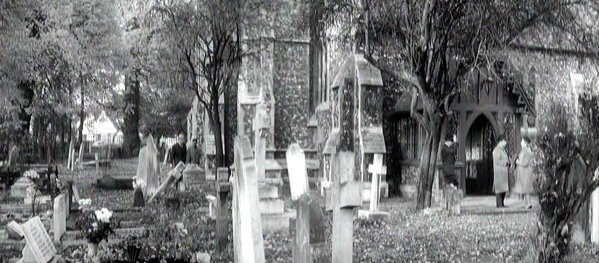
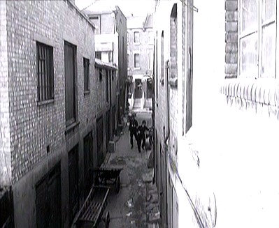
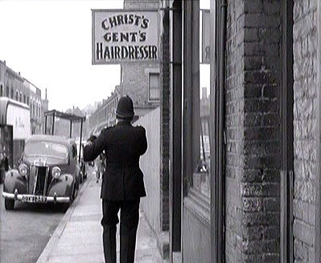
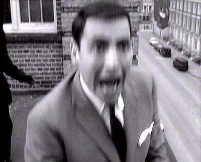
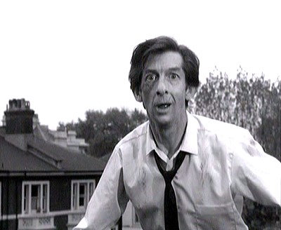
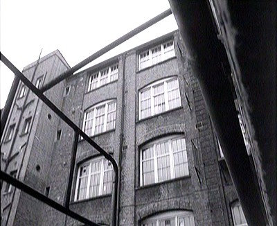
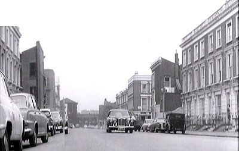
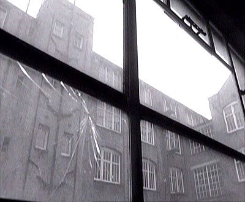
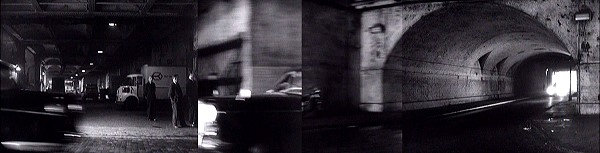

|
|
HELP FIND THE FOLLOWING LOCATIONS
PAGE 20
GIDEON’S
WAY:
Big Fish, Little Fish (Cyril
Frankel: October 1964)
St James the Great, Friern Barnet, Friern Barnet Lane, London N20 – It’s Sunday
and
after church Commander Gideon relaxes with his family.
(Identified by Phillip Judge, December 2024)

King's Arms Court, London E1 – “Happy” Roden (Jack MacGowran) is chased down the alley behind Cowan’s shop

Unknown 3 – Police car ZB4 arrives at the Stone Warehouse looking for “Happy”.


Unknown 4 – A Police constable asks a shopkeeper if they have seen ‘Happy’ Roden.

 I’m
assuming the ‘Christ’s’ referred
to here is Christ’s Hospital.
I’m
assuming the ‘Christ’s’ referred
to here is Christ’s Hospital.
Unknown 5 – The search for ‘Happy’ Roden continues door to door.

Academy Buildings, Fanshaw Street, London N1 – David Keen (Alexander Davion) arrives at one possible hiding spot for “Happy” Roden and leaps from his police car into the building.


Old
Montague Street, London E1 – Peter Wray
(Alan Baulch) makes his
way home, but does not know he has been
followed. Later that night Commander Gideon pays the Wray’s a visit.
(Identified by Geoff Dodd, February 2024)


Fitzroy
Road, Primrose Hill, London NW1 – “Happy” Roden
(Jack MacGowran) is
cornered by Inspector David Keen
(Alexander Davion) in
Frisky Lee’s old shoe warehouse
in Webb
Street.
Despite Keen’s request that he sees sense, Roden
attempts to flee across the roof and falls to his death.
(Identified by Thomas Triton on the of Unidentified photos of the
British Isles, Facebook Group, November 2021)






Braitwaite Street, London, E1 – Gideon and
Hemmingway are driven
in Gideon’s car round to the Gowan’s
shop (Wheler Street tunnel under Bishopgate Goods Station, redeveloped).
(Identified by Sietse Postma, February 2023)

Think you know a spot? Need a bigger image? Email me.
< Previous | Index | Avengerland | Next >
Copyright © 2024 Anthony R. McKay